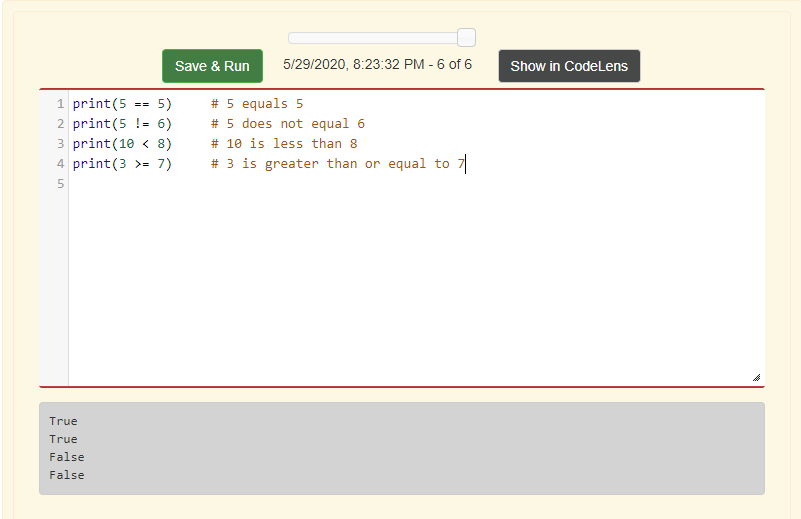
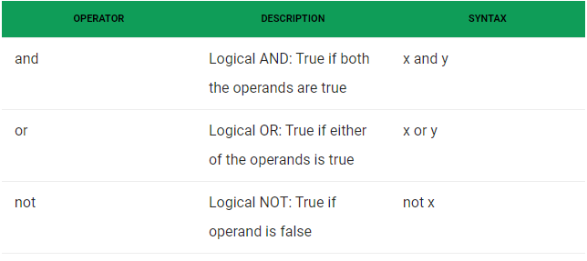
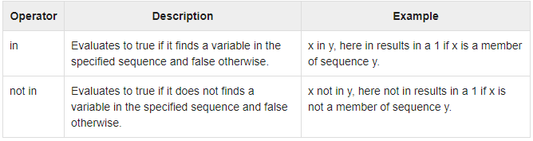
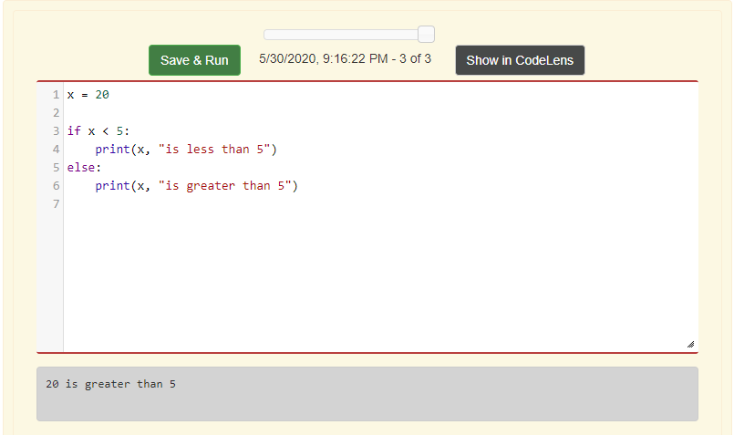
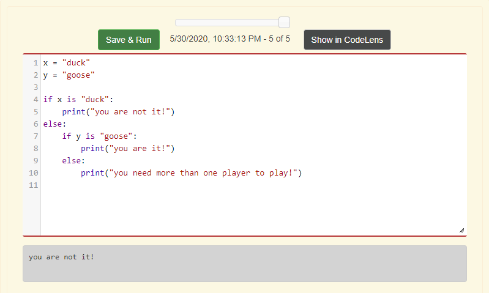
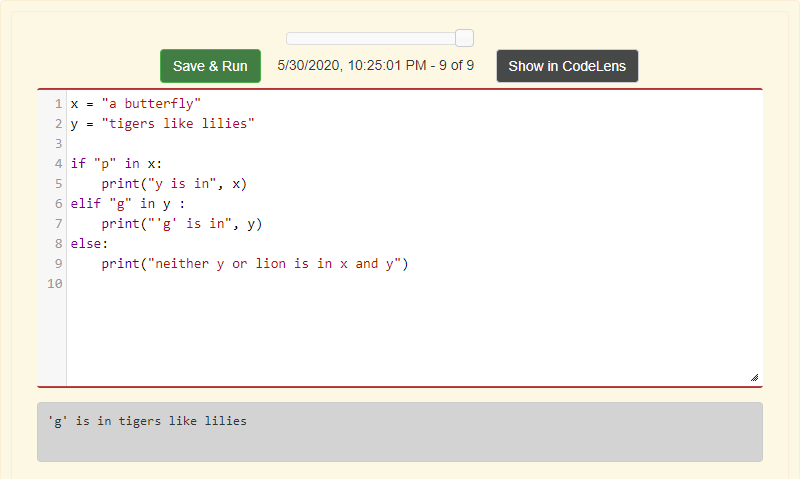
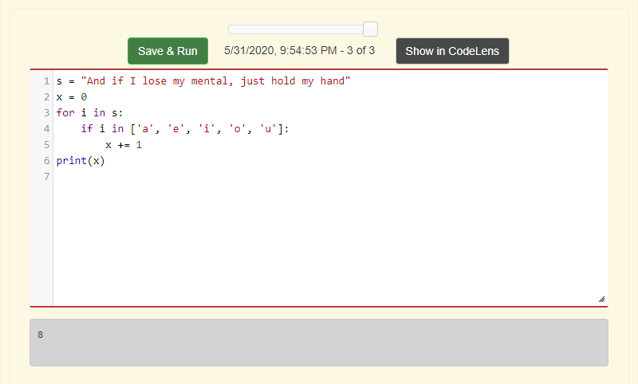
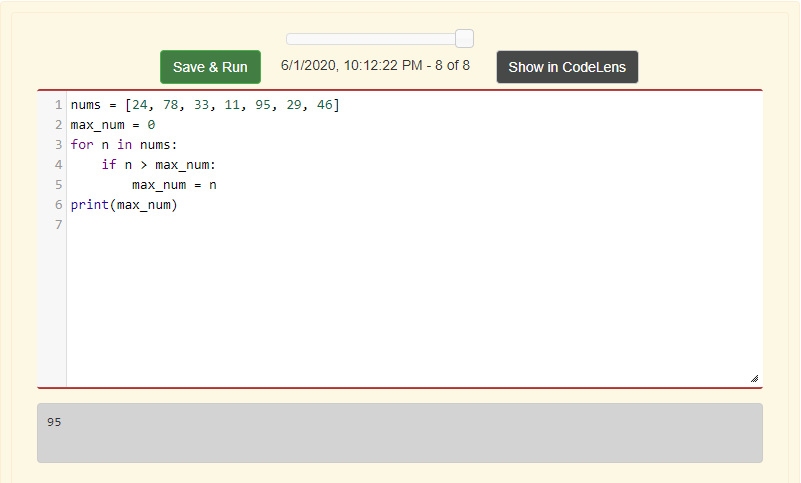

Chapter 8: Conditionals
What is a conditional?
A conditional is used to check if the conditions that have previously been stated will run the program effectively.
What are boolean variables?
There are two boolean variables, True and False. Which are used to evaluate conditional statements. Such as:

What are logical operators?
Logical operators are used on conditional statements, and are placed between two conditional statements. Logical operators include : "and", "or", and "not".

What are the membership operators?
Membership operators check if the data type is in the sequence.

What is the "if...else" statement?
The if...else statement is used to execute a code if the condition is True. But if the code doesn't meet the criteria of the condition (is False), then the programmer uses the "else" statement to execute an alternative result.

What are Nested Conditionals?
Nested conditionals are used to put conditionals into already created conditionals. That means that the programmer can start with a conditional, stating " if statement is...", and underneath that conditional, they declare another if statement and then finish with an else statement. Or they can create more if else statements afterwards.
- Note that the short version of the "if else" statement is "elif".

What are Chained Conditionals?
Chained conditionals are used when the programmer wants to add many conditionals to the program.

How do conditionals work with the accumalator pattern?
- Create a sequence.
- Initialize the accumulator variable.
- Declare a for loop.
- Declare a conditional.
- The accumulator variable is updated every time the for loop iterates through the sequence items.
- That's if the sequence meets the established conditional(s), then the value of the accumulator variable can be updated.

How to find the "max" and "min" with the accumalator pattern?
- A accumalator variable is established.
- A for loop is declared.
- Inside the for loop the conditional of "if the iterator variable is greater than the accumulator variable" is declared.
- This is to find the max integer or float in a sequence.
- If the programmer wants to find the min item in a sequence, then they need follow the same directions used to find the max in a sequence.
- The only difference is that the conditional will state, "if the iterator variable is less than the accumulator variable".
To find the max or the min in a sequence, the programmer needs to:
- Iterate through every item in the sequence.
- The accumulator variable becomes the first item in the sequence.
- Another item is iterated, and if the item is less than the current value of the accumulator variable, then the value stays and it goes on to the next item. Until it determines if the current accumulator variable value is the max value in the sequence.
- Same applies to finding the min item, except that it's looking for the lowest value in the sequence.
